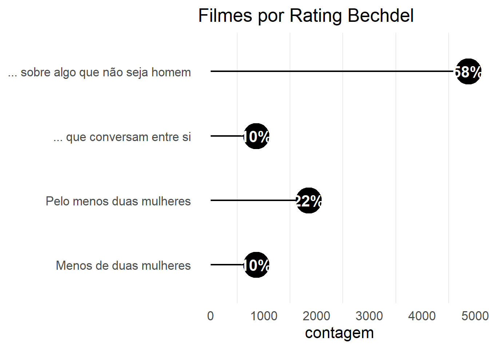
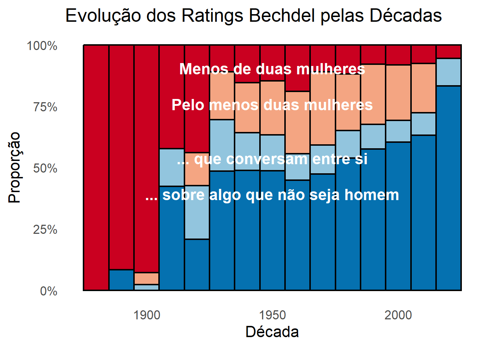
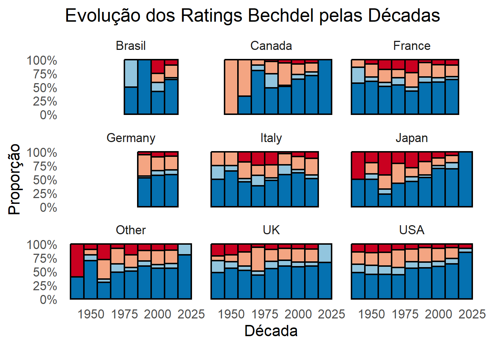
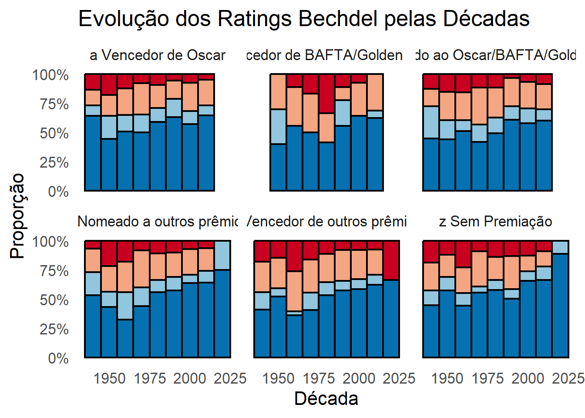
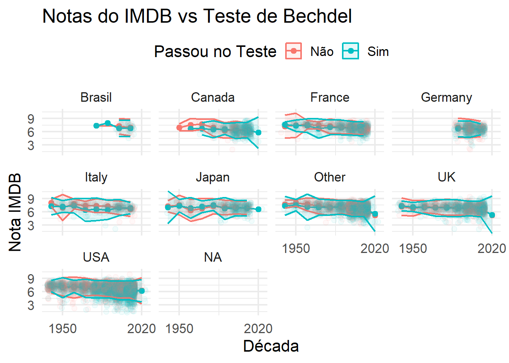

bechdel <- fromJSON("http://bechdeltest.com/api/v1/getAllMovies")Bechdel: Movies and Sexism
analysis
ggplot2
tidyverse
api
imdb
The Bechdel test checks whether a movie meets a simple condition: two (named) women talk to each other about something other than a man. There is a database of movies rated by the Bechdel index, and we analyzed it.
A friend introduced me to the Bechdel Test (in Portuguese), which checks whether a movie meets three basic rules:
- At least two (named) women
- … who talk to each other
- … about something other than a man
The test was named after the cartoonist Alison Bechdel (in Portuguese), who presented this idea in one of her comic strips, and today it is used to measure the degree of gender discrimination in film.
The website bechdeltest.com lets anyone contribute movies rated on the Bechdel test and provides easy access to a database of 8,440 movies from 1888 to the present day.
A personal two cents (Athos): Imagine the same rules, but swapping man for woman. How many movies do you think would fail the test? My opinion? Less than 1%!
Findings
- Countries like Canada and Japan seem to be improving;
- Brazil has little data, but doesn’t stand out positively;
- Awards and IMDB ratings are no different between movies that passed the test and movies that didn’t. One could argue that gender discrimination, while always unjustifiable, can’t even rely on the rhetoric that it pays off financially;
Data
The website provides an API to access the data. So bringing it into R is as simple as the line below.
glimpse(bechdel)Rows: 8,440
Columns: 5
$ year <int> 1888, 1892, 1895, 1895, 1896, 1896, 1896, 1896, 1898, 1898, 189…
$ title <chr> "Roundhay Garden Scene", "Pauvre Pierrot", "Tables Turned on th…
$ imdbid <chr> "0392728", "0000003", "0000014", "0132134", "0000091", "0000131…
$ rating <int> 0, 0, 0, 0, 0, 0, 0, 0, 0, 0, 0, 3, 0, 0, 0, 0, 0, 0, 0, 0, 0, …
$ id <int> 8040, 5433, 5444, 6200, 4982, 5406, 5445, 6199, 5411, 5410, 497…PS: notice the imdbid column. It lets us collect information from IMDB for further analysis!
Rating
The rating goes from 0 to 3 and represents how many rules the movie meets. Let’s label it for easier reading.
bechdel <- bechdel %>%
mutate(
indice_bechdel = case_when(
rating == 0 ~ "Menos de duas mulheres",
rating == 1 ~ "Pelo menos duas mulheres",
rating == 2 ~ "... que conversam entre si",
rating == 3 ~ "... sobre algo que não seja homem"
),
indice_bechdel = fct_reorder(indice_bechdel, rating),
decada = (year %/% 10)*10
)bechdel %>%
count(indice_bechdel, rating) %>%
mutate(
rating_p = scales::percent(n/sum(n), accuracy = 1)
) %>%
ggplot(aes(y = indice_bechdel, x = n)) +
geom_segment(aes(xend = 0, yend = indice_bechdel)) +
geom_point(size = 12) +
geom_text(aes(label = rating_p), color = "white", fontface = "bold") +
labs(x = "contagem", y = NULL, title = "Filmes por Rating Bechdel") +
theme(
panel.grid.minor.y = element_blank(),
panel.grid.major.y = element_blank(),
panel.grid.major.x = element_blank()
)
Evolution over the Decades
bechdel_por_decada <- bechdel %>%
count(decada, indice_bechdel, .drop = FALSE)
bechdel_por_decada %>%
ggplot(aes(x = decada, fill = indice_bechdel, y = n)) +
geom_col(position = "fill", colour = "black", width = 10) +
geom_text(aes(label = indice_bechdel), position = "fill", data = filter(bechdel_por_decada, decada == 1950), vjust = 2.5, colour = "white", fontface = "bold") +
scale_fill_brewer(palette = "RdBu", guide = "none") +
labs(x = "Década", y = "Proporção", title = "Evolução dos Ratings Bechdel pelas Décadas") +
scale_y_continuous(labels = scales::percent) +
theme(
panel.grid = element_blank()
) 
Bechdel Test results have been improving over time, so the outlook is positive. In an increasingly connected world, the hope is that information reaches more and more people and the discrimination ingrained in our culture dissolves.
IMDB information
The IMDB API is very bureaucratic to use. I found the OMDB website, which was much easier to use, though it may have less cool information. Here’s how to use it:
API Key
First I got an API KEY on their website and put it in my .Renviron, because then I can use Sys.get() to use it without having to show it to anyone.
Sys.getenv('OMDB_APIKEY')
# [1] as48732f1d (just pretend)Calling the API
Then I called the OMDB API using both my API KEY and the IMDB ID. The call has to look like this: http://www.omdbapi.com/?apikey={Sys.getenv('OMDB_APIKEY')}&i=tt{imdbid}. It returns a json that can be easily formatted with jsonlite::fromJSON().
library(glue)
pega_info_imdb <- function(imdbid) {
glue("http://www.omdbapi.com/?apikey={Sys.getenv('OMDB_APIKEY')}&i=tt{imdbid}") %>%
fromJSON() %>%
as_tibble()
}
# safely because the API may return error 522 (on the OMDB server)
pega_info_imdb_safe <- safely(pega_info_imdb)
# takes ~40 min
bechdel_com_imdb <- bechdel %>%
as_tibble() %>%
mutate(
infos_imdb = map(imdbid, pega_info_imdb_safe)
)Tidying the data
The data needs some massaging first because it comes as a nested list, all as text.
# Tidies the nested tables
arruma_infos_imdb <- function(infos_imdb) {
if(!is.null(infos_imdb$Ratings)) {
infos_imdb %>%
nest(Ratings = c(Ratings)) %>%
mutate(Ratings = map(Ratings, ~.x$Ratings %>% filter(Source %in% "Internet Movie Database"))) %>%
unnest(Ratings)
} else {
infos_imdb
}
}
# creates bechdel with the imdb info and fixes the variable types
bechdel_com_imdb <- bechdel_com_imdb %>%
mutate(
deu_errado = map_lgl(infos_imdb, ~ !is.null(.x$error)),
infos_imdb = infos_imdb %>% map("result") %>% map(arruma_infos_imdb)
) %>%
unnest(infos_imdb) %>%
mutate(
imdbRating_num = imdbRating %>% parse_number()
)Final table
glimpse(bechdel_com_imdb)Rows: 8,414
Columns: 41
$ year <int> 1888, 1892, 1895, 1895, 1896, 1896, 1896, 1896, 1898, 1…
$ title <chr> "Roundhay Garden Scene", "Pauvre Pierrot", "Tables Turn…
$ imdbid <chr> "0392728", "0000003", "0000014", "0132134", "0000091", …
$ rating <int> 0, 0, 0, 0, 0, 0, 0, 0, 0, 0, 0, 3, 0, 0, 0, 0, 0, 0, 0…
$ id <int> 8040, 5433, 5444, 6200, 4982, 5406, 5445, 6199, 5411, 5…
$ indice_bechdel <fct> Menos de duas mulheres, Menos de duas mulheres, Menos d…
$ decada <dbl> 1880, 1890, 1890, 1890, 1890, 1890, 1890, 1890, 1890, 1…
$ Title <chr> "Roundhay Garden Scene", "Poor Pierrot", "The Sprinkler…
$ Year <chr> "1888", "1892", "1895", "1895", "1896", "1896", "1896",…
$ Rated <chr> "NOT RATED", "N/A", "Not Rated", "Not Rated", "N/A", "N…
$ Released <chr> "14 Oct 1888", "28 Oct 1892", "N/A", "28 Aug 1895", "N/…
$ Runtime <chr> "1 min", "4 min", "1 min", "1 min", "3 min", "1 min", "…
$ Genre <chr> "Documentary, Short", "Animation, Comedy, Short, Romanc…
$ Director <chr> "Louis Aimé Augustin Le Prince", "Émile Reynaud", "Loui…
$ Writer <chr> "N/A", "N/A", "N/A", "N/A", "Georges Méliès", "N/A", "A…
$ Actors <chr> "Annie Hartley, Adolphe Le Prince, Joseph Whitley, Sara…
$ Plot <chr> "In the garden, a man asks his friends to do something …
$ Language <chr> "N/A", "N/A", "N/A", "N/A", "N/A", "None", "N/A", "N/A"…
$ Country <chr> "UK, France", "France", "France", "USA", "France", "Fra…
$ Awards <chr> "N/A", "N/A", "N/A", "N/A", "N/A", "N/A", "N/A", "N/A",…
$ Poster <chr> "https://m.media-amazon.com/images/M/MV5BOGE3YjczMTQtZT…
$ Metascore <chr> "N/A", "N/A", "N/A", "N/A", "N/A", "N/A", "N/A", "N/A",…
$ imdbRating <chr> "7.5", "6.6", "7.1", "6.7", "6.7", "5.8", "5.2", "7.4",…
$ imdbVotes <chr> "4,609", "1,144", "4,287", "1,755", "2,149", "1,040", "…
$ imdbID <chr> "tt0392728", "tt0000003", "tt0000014", "tt0132134", "tt…
$ Type <chr> "movie", "movie", "movie", "movie", "movie", "movie", "…
$ DVD <chr> "N/A", "N/A", "N/A", "N/A", "N/A", "N/A", "N/A", "N/A",…
$ BoxOffice <chr> "N/A", "N/A", "N/A", "N/A", "N/A", "N/A", "N/A", "N/A",…
$ Production <chr> "N/A", "N/A", "N/A", "N/A", "N/A", "N/A", "N/A", "N/A",…
$ Website <chr> "N/A", "N/A", "N/A", "N/A", "N/A", "N/A", "N/A", "N/A",…
$ Response <chr> "True", "True", "True", "True", "True", "True", "True",…
$ Source <chr> "Internet Movie Database", "Internet Movie Database", "…
$ Value <chr> "7.5/10", "6.6/10", "7.1/10", "6.7/10", "6.7/10", "5.8/…
$ Error <chr> NA, NA, NA, NA, NA, NA, NA, NA, NA, NA, NA, NA, NA, NA,…
$ Season <chr> NA, NA, NA, NA, NA, NA, NA, NA, NA, NA, NA, NA, NA, NA,…
$ Episode <chr> NA, NA, NA, NA, NA, NA, NA, NA, NA, NA, NA, NA, NA, NA,…
$ seriesID <chr> NA, NA, NA, NA, NA, NA, NA, NA, NA, NA, NA, NA, NA, NA,…
$ totalSeasons <chr> NA, NA, NA, NA, NA, NA, NA, NA, NA, NA, NA, NA, NA, NA,…
$ Ratings <lgl> NA, NA, NA, NA, NA, NA, NA, NA, NA, NA, NA, NA, NA, NA,…
$ deu_errado <lgl> FALSE, FALSE, FALSE, FALSE, FALSE, FALSE, FALSE, FALSE,…
$ imdbRating_num <dbl> 7.5, 6.6, 7.1, 6.7, 6.7, 5.8, 5.2, 7.4, 6.0, 7.5, 7.5, …Bechdel by Country
Japan and Canada are the countries with the clearest trends of change. The others seem stagnant. Brazil has 45 movies analyzed and doesn’t look different from Germany, the UK, the US or France.

Brazilian movies
bechdel_com_imdb %>%
filter(str_detect(Country, "Brazil")) %>%
select(year, Title, rating) %>%
arrange(rating) %>%
knitr::kable()| year | Title | rating |
|---|---|---|
| 2007 | Estomago: A Gastronomic Story | 0 |
| 2007 | You, Me and Him | 0 |
| 2009 | The Secret of Kells | 0 |
| 2011 | Samsara | 0 |
| 2013 | Boy and the World | 0 |
| 2014 | Ardor | 0 |
| 2002 | City of God | 1 |
| 2003 | Fear X | 1 |
| 2011 | Rio | 1 |
| 2012 | Two Rabbits | 1 |
| 2013 | Vai que dá Certo | 1 |
| 2014 | Trash | 1 |
| 2014 | Futuro Beach | 1 |
| 2018 | Tito and the Birds | 1 |
| 2019 | Bacurau | 1 |
| 1985 | Kiss of the Spider Woman | 2 |
| 2003 | The Man Who Copied | 2 |
| 2009 | From Beginning to End | 2 |
| 2019 | Turma da Mônica: Laços | 2 |
| 1986 | Hour of the Star | 3 |
| 1998 | Central Station | 3 |
| 2004 | Nina | 3 |
| 2005 | Æon Flux | 3 |
| 2007 | Elite Squad | 3 |
| 2008 | Blindness | 3 |
| 2008 | Lion’s Den | 3 |
| 2010 | So Hard to Forget | 3 |
| 2011 | Fast Five | 3 |
| 2011 | Found Memories | 3 |
| 2012 | Neighboring Sounds | 3 |
| 2012 | Tabu | 3 |
| 2012 | Snezhnaya koroleva | 3 |
| 2013 | Reaching for the Moon | 3 |
| 2013 | Open Road | 3 |
| 2013 | My Mom Is a Character | 3 |
| 2013 | Brazilian Western | 3 |
| 2013 | Time and the Wind | 3 |
| 2014 | August Winds | 3 |
| 2014 | The Way He Looks | 3 |
| 2014 | Last Night | 3 |
| 2015 | Neon Bull | 3 |
| 2015 | The Second Mother | 3 |
| 2016 | Aquarius | 3 |
| 2017 | Call Me by Your Name | 3 |
| 2018 | The Heiresses | 3 |
Award-winning Movies
The dataset includes awards information. Movies without awards don’t stand apart from award-winning movies in terms of Bechdel rating, which indicates that sexism is not related to a movie’s success.
bechdel_por_decada_e_premiacao <- bechdel_com_imdb %>%
mutate(
premiacao = case_when(
str_detect(Awards, "N/A") | is.na(Awards) ~ "z Sem Premiação",
str_detect(Awards, "Won.*Oscar") ~ "a Vencedor de Oscar",
str_detect(Awards, "Won.*(BAFTA|Golden Globe)") ~ "b Vencedor de BAFTA/Golden Globe",
str_detect(Awards, "Nominated") ~ "c Nomeado ao Oscar/BAFTA/Golden Globe",
str_detect(Awards, "win") ~ "d Vencedor de outros prêmios",
str_detect(Awards, "nomination") ~ "d Nomeado a outros prêmios",
TRUE ~ "e Outro"
)
) %>%
count(premiacao, decada, indice_bechdel, .drop = FALSE)
bechdel_por_decada_e_premiacao %>%
filter(decada >= 1940) %>%
ggplot(aes(x = decada, fill = indice_bechdel, y = n)) +
geom_col(position = "fill", colour = "black", width = 10) +
scale_fill_brewer(palette = "RdBu", guide = "none") +
labs(x = "Década", y = "Proporção", title = "Evolução dos Ratings Bechdel pelas Décadas") +
scale_y_continuous(labels = scales::percent) +
theme(
panel.grid = element_blank()
) +
facet_wrap(vars(premiacao), ncol = 3)
IMDB rating
IMDB ratings also don’t differ between movies that passed and movies that failed the Bechdel test.
bechdel_por_decada_e_pais <- bechdel_por_decada_e_pais %>%
mutate(
imdbVotes = parse_number(imdbVotes),
passou_no_teste = case_when(
rating %in% 3 ~ "Sim",
TRUE ~ "Não"
)
)
bechdel_nota_por_decada <- bechdel_por_decada_e_pais %>%
group_by(pais) %>%
filter(n() > 10) %>%
group_by(pais, decada, passou_no_teste) %>%
summarise(
imdb_media = mean(imdbRating_num, na.rm = TRUE),
imdb_dp = sd(imdbRating_num, na.rm = TRUE),
imdb_inf = imdb_media - 2*imdb_dp,
imdb_sup = imdb_media + 2*imdb_dp
)
bechdel_nota_por_decada %>%
filter(decada >= 1940) %>%
ggplot(aes(x = decada, y = imdb_media, colour = passou_no_teste)) +
geom_line() +
geom_point() +
geom_jitter(data = bechdel_por_decada_e_pais %>% filter(decada >= 1940), aes(y = imdbRating_num), alpha = 0.05) +
geom_ribbon(aes(ymin = imdb_inf, ymax = imdb_sup, fill = passou_no_teste), alpha = 0.1) +
facet_wrap(vars(pais)) +
labs(x = "Década", y = "Nota IMDB", colour = "Passou no Teste", fill = "Passou no Teste", title = "Notas do IMDB vs Teste de Bechdel") +
scale_x_continuous(breaks = c(1950, 2020)) +
theme(legend.position = "top")
What did you think of the analyses? Let us know! It’s a topic worth discussing by everyone.